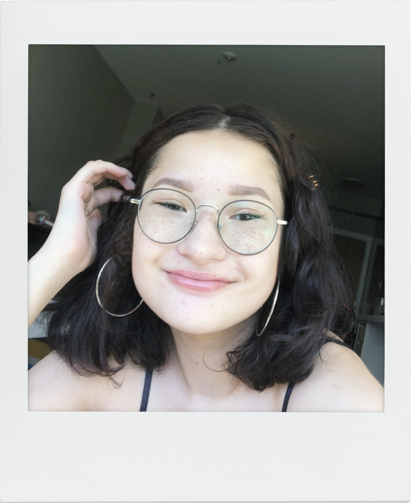

A clean, modern portfolio template for creatives of all kinds providing a solid foundation to showcase your work in style. Clone this template and make it yours!
“It was so interesting to see other classmates’ websites full of their personalities!” — Sol Yoon
“It was so cool to code a full website with my personal branding. Be brave! Try something new, bold, and fun! I learned so much by committing to my design choices. It builds my confidence to know I can pick up a complex skill like coding and make it match my design style.” — Lily Rosen
“Have fun learning a new skill.” — Jacob Chong
“Coding, for me, is super fun, and I do plan on delving into it more in the next year to really polish up my website. Starting out with a template for our coded website was helpful to refresh my mind on coding. I like that we were able to get a lot of independent working time to curate our own website. I found it helpful going through past examples from other grads on how they set up their website, which I found to be influential for my own website. I also loved seeing everyone’s websites during presentation day, and it gave me ideas on how to improve mine.” — Angelica Blanch
“Some of my highlights of this course were seeing everyone’s websites at the end of the course and being able to code again. I enjoyed getting to do something that’s different from our usual design courses and being able to shut off my brain and focus on the code. It’s also satisfying to see all of your work come together at the end.” — Carmen Huang